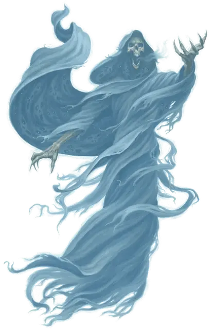

Предвестник гибели
Gallows Speaker
Средняя Нежить

Класс Доспеха 12
Хиты 85 (19к8)
Скорость 0 футов, летая 40 футов (парит)
| мод | спас | ||
|---|---|---|---|
| СИЛ | 8 | −1 | −1 |
| ЛОВ | 14 | +2 | +2 |
| ТЕЛ | 10 | +0 | +0 |
| мод | спас | ||
|---|---|---|---|
| ИНТ | 10 | +0 | +0 |
| МДР | 12 | +1 | +4 |
| ХАР | 18 | +4 | +4 |
Навыки Восприятие +7
Сопротивление урону дробящий, колющий, рубящий от немагических атак
Иммунитет к урону некротическая энергия, яд
Иммунитет к состояниям захват, испуг, истощение, окаменение, опутанность, отравление, очарование, паралич, сбивание с ног
Чувства истинное зрение 60 футов, пассивное Восприятие 17
Языки Любые языки, которые составляющие его духи знали при жизни
Опасность 6 (2300 опыта)
Бонус мастерства +3
Особенности
Чувства прорицателя. Зрение гибельного вестника простирается на 60 футов на Эфирный план, когда он находится на Материальном плане, и наоборот.
Бестелесное перемещение. Гибельный вестник может перемещаться сквозь других существ и предметы, как если бы они были труднопроходимой местностью. Он получает 5 (1к10) урона силовым полем, если оканчивает ход внутри предмета.
Необычная природа. Гибельный вестник не нуждается в воздухе, еде, питье или сне.
Действия
Предугадывающее прикосновение. Рукопашная атака заклинанием: +7 к попаданию, досягаемость 5 фт., одно существо. Попадание: 15 (2к10 + 4) урона психической энергией, и цель должна бросить к4 и вычесть результат из следующего броска атаки или спасброска, совершаемого ею до начала следующего хода предвестника гибели.
Отголоски страданий. Гибельный вестник выбирает существо, которое он может видеть в пределах 30 футов от него. Цель должна совершить спасбросок Мудрости Сл 15. При провале цель получает 19 (3к12) урона психической энергией, и волны болезненных воспоминаний перескакивают от цели к трем другим существам по выбору предвестника гибели, которые находятся в пределах 30 футов от цели, каждое существо получает 13 (3к8) урона психической энергией.
Описание
Предвестники гибели возникают на местах массовой гибели или на местах, где существа регулярно встречают смерть. Со временем измученные болью фантомы и задержавшиеся души объединяются в существо, которое знает смерть в мириадах её форм. Такие скопища духов терзаемы своей общей болью, бесконечно и бессвязно извергая последние мысли, когда они набрасываются на живых. Познав безграничье смерти, предвестники гибели могут предсказывать страдания, предвидеть приговор, вынесенный им, и подавлять разум своих врагов видениями бесчисленных насильственных смертей.
Предвестники гибели редко говорят связно или общаются с живыми, они полностью одержимы своими воспоминаниями о смерти. Эта нежить бесконечно бормочет себе под нос, извергая последние проклятия, сожаления, мольбы и извинения. Те, кто задерживается и слушает предвестника гибели, могут получить представление о какой-нибудь из его многочисленных смертей.